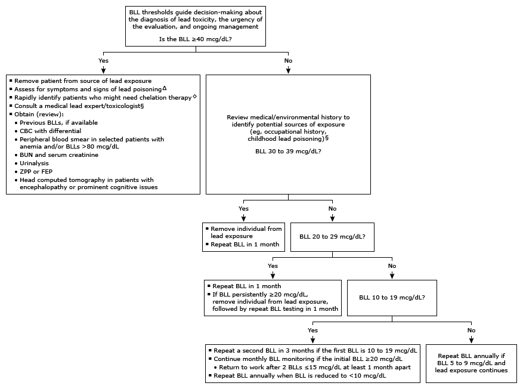

Initial evaluation of positive blood lead levels in adults*¶

This algorithm is intended for use with additional UpToDate content on lead poisoning.
BLL: blood lead level; CBC: complete blood count; BUN: blood urea nitrogen; ZPP: zinc protoporphyrin; FEP: free erythrocyte protoporphyrin. * In the United States, the BLL reference range is <5 mcg/dL (0.24 micromol/L) in adults. However, there is no apparent lower threshold for safe exposure. Ideally, for individuals who work in and around lead, maintain BLL <10 mcg/dL (0.48 micromol/L) and <5 mcg/dL for women who might become pregnant. Interpretation of a specific abnormal test result should be based upon levels appropriate to adult toxicity (rather than childhood toxicity). ¶ Educate individuals with any exposure to lead about potential adverse health effects and methods to reduce or eliminate lead exposure. Address occupational or environmental conditions that cause lead toxicity. Δ Symptoms of acute lead poisoning may include abdominal pain "lead colic," headache, muscle aches, fatigue, and irritability. Signs associated with chronic excess lead burden include high blood pressure, neurocognitive deficits, encephalopathy, and anemia. ◊ Individuals with BLL ≥80 mcg/dL (or BLL 50 to <80 mcg/dL and symptoms of acute lead poisoning) may benefit from urgent chelation therapy. Interventions are approximate, and decisions about chelation are made on a case-by-case basis. § Referral to an occupational/environmental medicine clinician may be helpful, particularly if elevated BLL ≥20 mcg/dL. The Association of Occupational and Environmental Clinics (AOEC) website includes information about finding occupational medicine clinicians who may assist with diagnosis of lead poisoning, decisions regarding chelation therapy, environmental site evaluations, and preventive measures to reduce lead exposure and poisoning.